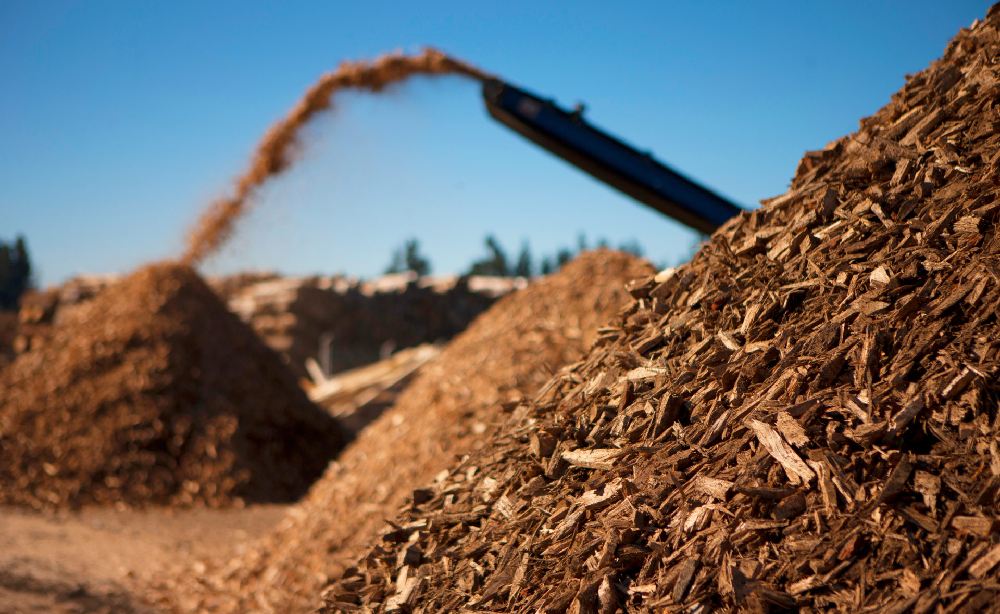

Energía hidráulica & Bioenergía
Dos fuentes sostenibles que aprovechan el poder del agua y la biomasa para transformar el futuro energético.

Dos fuentes sostenibles que aprovechan el poder del agua y la biomasa para transformar el futuro energético.
Utiliza el movimiento del agua en ríos, presas o corrientes naturales para generar electricidad. Se basa en convertir la energía cinética y potencial del agua en energía eléctrica mediante turbinas hidráulicas.
Aprovecha materia orgánica como residuos agrícolas, forestales o urbanos para producir calor, electricidad o biocombustibles. Es una forma de reciclaje energético que transforma desechos en recursos útiles.
El agua almacenada en una presa se libera y fluye por tuberías hacia turbinas. La fuerza del agua hace girar las turbinas, que están conectadas a generadores eléctricos. La electricidad producida se transforma y se distribuye por la red.
Se utiliza materia orgánica como madera, residuos agrícolas o estiércol. Esta biomasa se quema en calderas para generar calor o vapor, que mueve turbinas conectadas a generadores. También puede transformarse en biogás o biocombustibles mediante procesos bioquímicos.